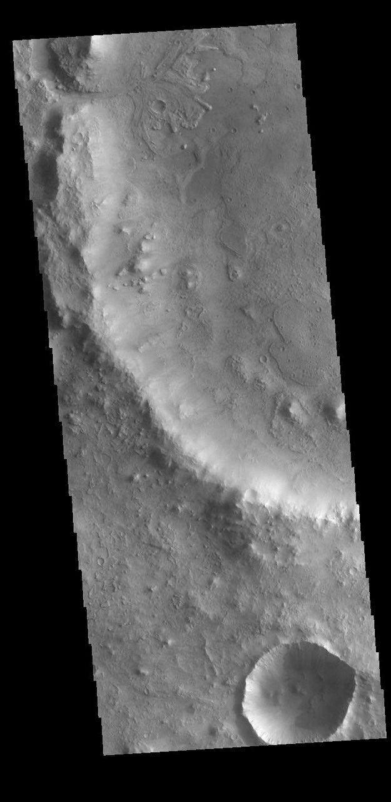
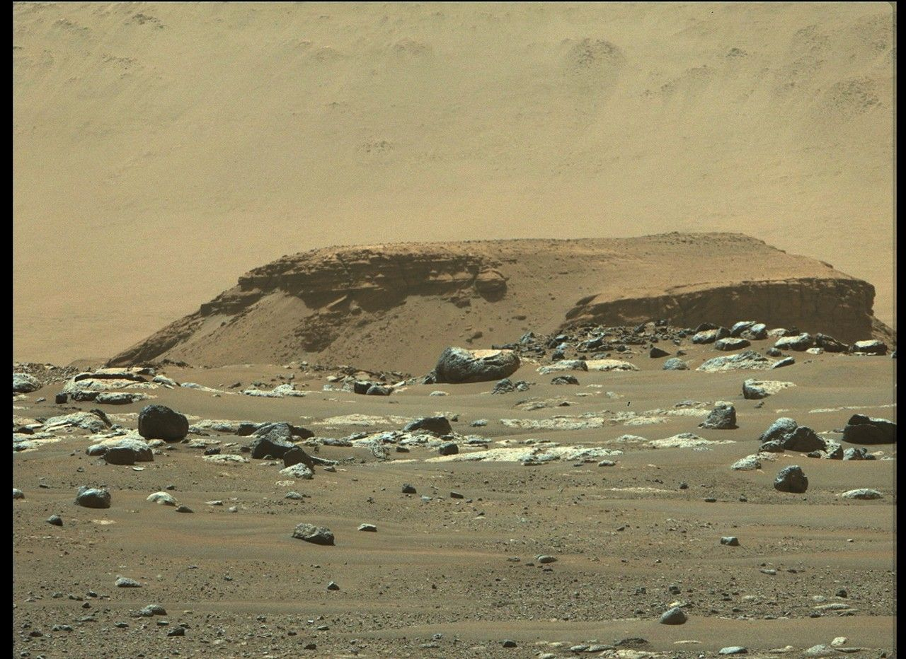

Excursion planner
40 × 40 / CONCEPTUAL GRIDOBSERVED / NASA SOURCE: THEMIS Jezero context; unregistered overlay

Conceptual 4 km × 4 km window · nominal 100 m cells. Not georeferenced; too coarse for individual obstacles.
Sources & disclosure
NASA SOURCE / OBSERVED: Jezero Crater Delta, PIA23386. Mars Odyssey / THEMIS VIS. Credit: NASA/JPL-Caltech/Arizona State University. Captured July 2, 2019. Full image retained without rotation or cropping; its footprint, projection and pixel scale are not established here. The square grid is an illustrative overlay, not a registered 4 km footprint.
Inspect science context and surface observation
INTERPRETED: NASA describes a sedimentary delta formed where river flow slowed on entering a lake. This motivates the hypothetical sampling objective; it does not establish traversability.

OBSERVED: Perseverance delta view, PIA24485, Mastcam-Z, February 22, 2021. Credit: NASA/JPL-Caltech/ASU/MSSS. Published color rendering approximates natural appearance. This is regional context, not a photograph of our hypothetical waypoint.
DERIVED: no elevation or slope product integrated. Full provenance.
The grid, dust zone and route costs are simulated, independent of NASA measurements. No live telemetry or physical hazard prediction.